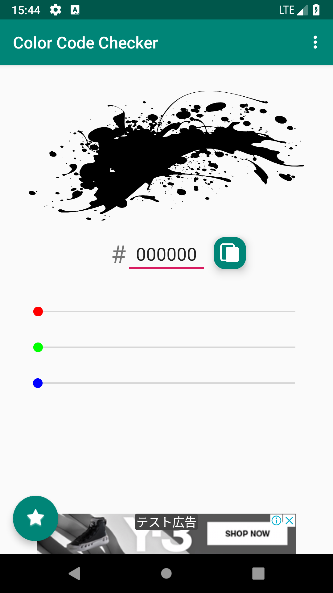
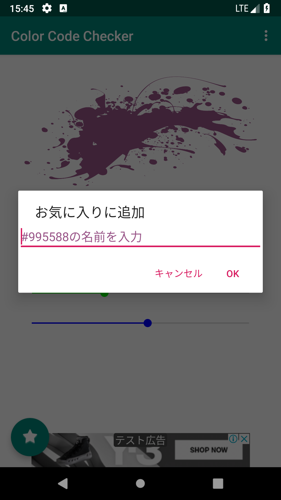
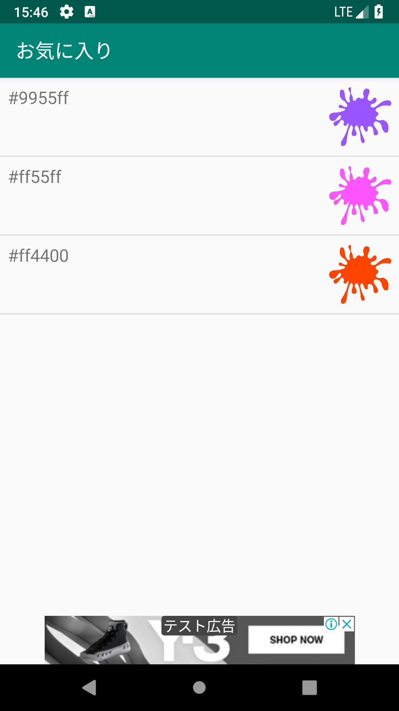
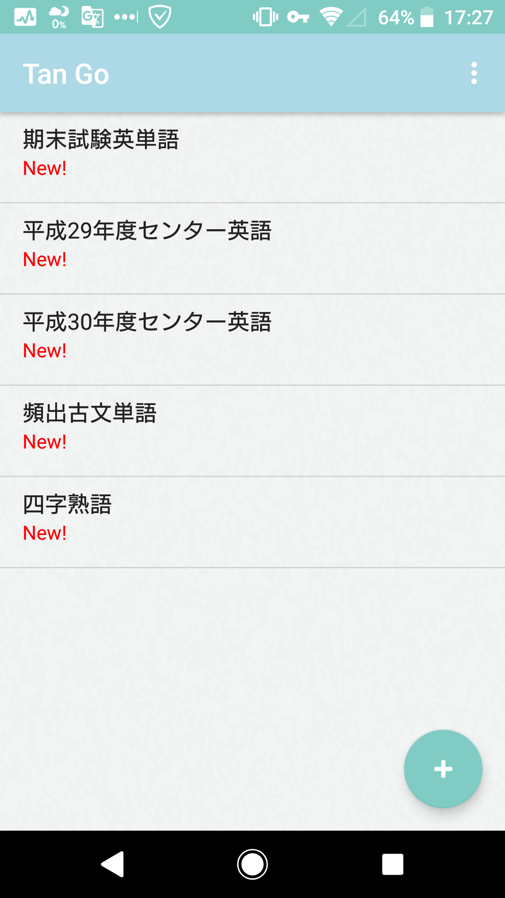
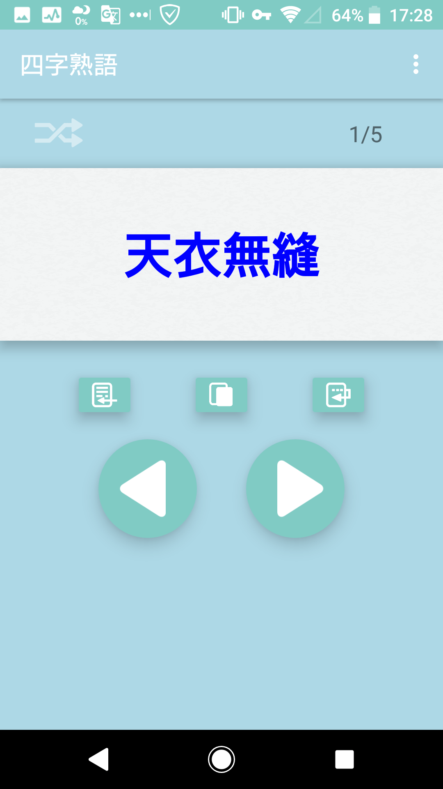
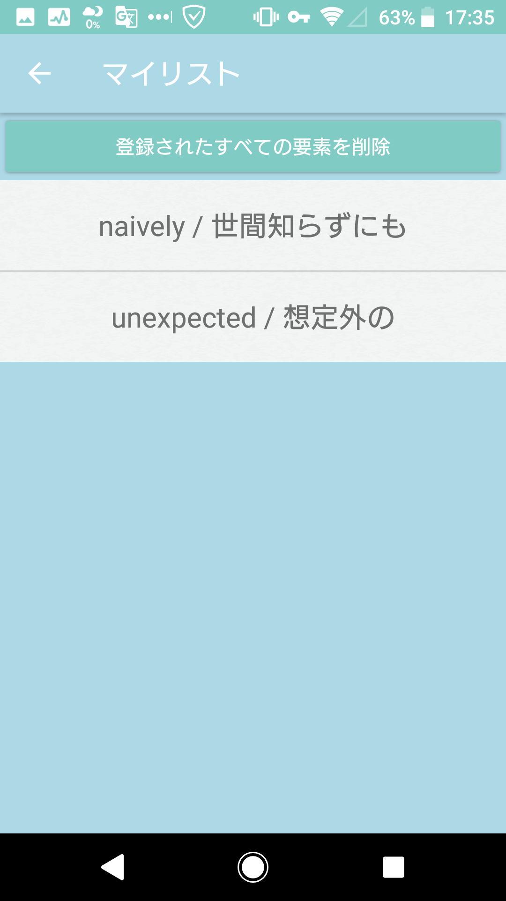

Color Code Checker (カラーコードチェッカー) (2019)
カラーコードを指定して表示するアプリ．好みの色はコメント付きで保存できる．
(en) This application displays colors by specifying a color code. You can save your favorite colors with comments.
スクリーンショット (Screenshots)
  Tan-Go (タン-ゴー) (2019)
CSV形式入出力に対応した単語帳アプリ．シャッフル出題や，作成したニガテな単語のリストから1日に2回，通知を通して出題する機能もある(通知の許可が必要)．作成した単語帳のデータはLINE等のメッセージアプリで送信できる
(en) This is a flashcard application that supports CSV format I/O. You can use shuffle mode. Also you can make weak word lists and the app gives you a question by using notification twice a day. (need permission)
スクリーンショット (Screenshots)
  